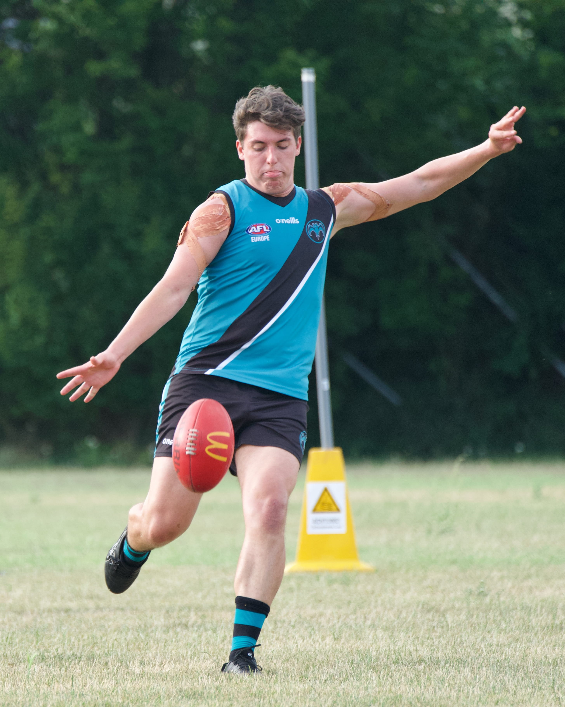
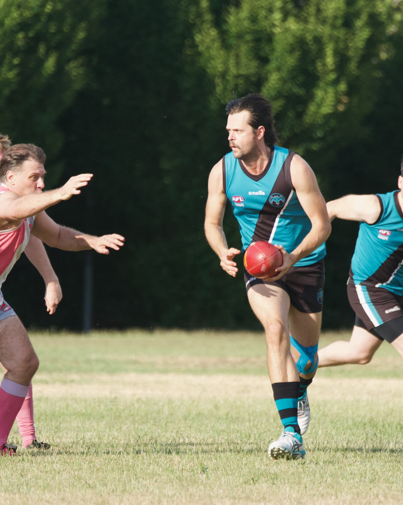

Budapest Bats Australian Football Club
We are Hungary's first Australian Football Club! Join us, train with us, or come watch a match!

We are Hungary's first Australian Football Club! Join us, train with us, or come watch a match!
The Budapest Bats Australian Football Club was established in 2019. We compete as part of the Empire Cup, travelling through Central Europe to compete against our rivals in Austria, Czechia and Poland. Trainings are on Monday and Wednesday nights. We run social events from nights out together through to AFL watch parties. We are recruiting players/volunteers/coaches, all are welcome! Our members come from all over the world, Hungary and Australia just to name a few, we are a club for everyone!
Australian Football (also known as Aussie Rules or AFL) is a fast-paced, exciting sport played on a large oval field with an oval-shaped ball. The game combines running, kicking, handballing, tackling, and spectacular high marks (catches), making it one of the most unique and dynamic sports in the world.
Teams score a goal by kicking the ball between the two central goal posts, which is worth 6 points. If the ball passes between a goal post and the smaller outer post, it scores a behind, worth 1 point.

In the Empire Cup, the competition we play in, matches are typically played 9-a-side, making the game fast, open, and perfect for players of all experience levels.

If you've never played Australian Football before, don't worry—everyone starts somewhere! By attending training regularly, you'll quickly learn the fundamentals, including kicking, handballing, marking, and tackling, with the support of our friendly teammates.
If you're interested in giving Australian Football a try, we'd love to have you at training. All you need to bring is a pair of running shoes, a water bottle, and a willingness to give it a go!
Alsó-nagyrét, Margitsziget, 1007 Budapest, Hungary
Kőbánya Sport Club, 1105 Budapest, Ihász u. 24, Hungary